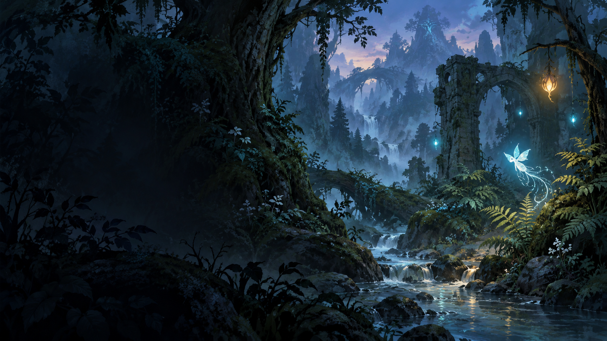

01 · ABILITIES
Ability node
Cost 2 points · prerequisite shown in text
GLOAMWATER · SPECIMEN FRAGMENTS
Original forest UI primitives; not a complete game screen.

01 · ABILITIES
Cost 2 points · prerequisite shown in text
02 · SHARDS
03 · FOREST MAP
Selection previews only; no state changed.